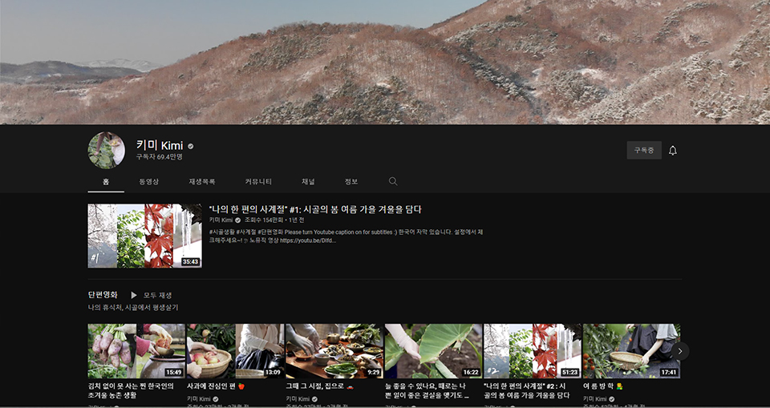

즐거운 일상
우리는 왜 시골을 찾을까
스크린으로 떠나는 5도 2촌
삶이 우리를 힘들고 지치게 만들 때, 여러분은 쉼을 위해 어딜 찾으시나요? 반듯한 도시의 화려한 불빛도 좋지만, 대부분은 소박하고 평화로운 전원의 풍경을 떠올릴 겁니다. 하지만 어디론가 훌쩍 떠나고 싶어도 상황과 여건이 따라주지 않습니다. 도시와 전원을 조화롭게 즐기는 것이 가장 좋다는 걸 알면서도 말이죠.
매년 대한민국을 이끌 키워드와 트렌드를 제시하는 서울대 소비트렌드 분석센터의 트렌드 코리아 시리즈는 2022년 대한민국의 소비시장을 주도할 키워드로 러스틱 라이프(Rustic Life)를 꼽습니다.
러스틱 라이프란 '자연과 시골이 가진 매력을 즐기는 동시에 도시 생활에 여유와 편안함을 부여하는 시골 지향 라이프스타일'이라고 하는데요. 4도 3촌 또는 5도 2촌이 러스틱 라이프의 대표적인 형태입니다. 일주일 중 5일은 도시에서, 그리고 나머지 2일은 시골에서 지내는 라이프스타일인거죠. 비슷한 개념으로는 원격근무 또는 재택근무가 많아지면서 등장한 워케이션(Workcation)이 있습니다.
또 물을 바라보며 멍을 때리는 물멍과 불을 바라보며 멍을 잡는 불멍에 이어 논과 밭, 산과 들을 바라보며 멍을 때리는 신종 멍인 '논멍'과 '산멍'도 등장해 인기를 얻고 있습니다. 러스틱 라이프, 워케이션, 그리고 논멍까지. 어쩌면 우리는 팬데믹으로 인해 지치고, 마음 둘 곳 없는 세상에서 잠시 벗어나고픈 걸까요?
우리가 정말 원하는 휴식은 뭘까?
코로나 팬데믹은 우리에게 많은 상실을 경험하도록 만들었습니다. 사랑하는 사람과는 물리적으로 멀어지게 만들었고, 우리가 활동할 수 있는 시간을 제한시켰으며, 활동 반경의 자유도 빼앗아 갔습니다.
사람들이 해외여행이나 크루즈 투어와 같은 화려한 여행보다 소박한 일상을 찾아 산과 들로, 시골로 나선 이유도 바로 여기에 있습니다. 제약으로 가득한 환경에서 누릴 수 있는 자유란 많지 않으니까요.
로나 이후 경주, 전주, 제주 같은 도시를 찾는 국내 관광객이 많아진 것도 같은 맥락입니다. 해외여행이 여의치 않은 상황에서 평소에는 다소 멀게 느껴졌고, 비교적 가까워 미뤄두었던 대한민국의 도시들로 사람들이 몰린 것입니다.
이뿐만이 아닙니다. 최근에는 산과 들과 바다가 있는 시골에 별장을 얻거나, 오래된 옛집을 구매해 개조하는 사례도 심심치 않게 들을 수 있습니다. 그렇다면 도시를 떠나 시골로 향하는 이들과 도시에 지내면서도 시골과 같은 환경을 찾는 사람들은 도대체 왜 불편함과 수고로움을 감수하면서까지 ‘러스틱 라이프’를 추구하는 걸까요?
우리 사회가 ‘나노사회’로 변화하는 과정에서 힌트를 찾을 수 있습니다. 대가족에서 핵가족, 핵가족에서 다시 1인 가구로 파편화되어 가고 있는 현대 사회에서 개인의 혼란이 가중되고 있다고요.시, 분, 초를 다시 나노로 분할해 사용하며 최대한 바쁘게 지내는 현대인들이 사실 자신이 어디에 속하고, 어떻게 행동해야 하며, 어떤 시류를 좇아야 하는지 알지 못하고 부유하는 개인이라는 겁니다.
시골을 내 눈앞 스크린으로 옮겨온 크리에이터들
직접 시골에 가지 않아도 간접적으로 러스틱 라이프를 경험하게 만들고, 콘텐츠 그 자체로 지친 몸과 마음을 치유해주는 크리에이터들도 등장했습니다. 해당 크리에이터들의 구독자와 팬들은 이들이 어떤 사연으로 도시가 아닌 시골에서 살게 됐는지, 그리고 어떤 삶을 살고 있는지 보는 것만으로 마음이 치유된다고 이야기하는데요. 화려하지 않은 소박한 일상을 통해 울림과 감동, 힐링을 선물하는 몇 명의 크리에이터를 소개합니다.

키미 님은 '시골에서 평생 살기'와 ‘보람찬 나의 시골 생활’을 슬로건으로 시골에서의 잔잔하고 소박한 일상을 공유하는 유튜브 크리에이터입니다. 팬들에게는 실사판 '리틀 포레스트'로 불리고 있으며, 계절마다 직접 농사를 짓고 이렇게 수확한 제철 작물로 요리를 하고 밥상을 차리는 모습이 인상적인데요.
키미 님의 특징 중 하나는 시골에서의 삶이 그렇듯, 정해진 일정이나 계획에 맞추어 영상을 업로드하는 것이 아니라 크리에이터 본인의 바이오리듬이나 컨디션에 맞추어 영상을 채널에 올린다는 점입니다.
좋은 에너지를 담아서 만든 영상일수록(마치 음식처럼) 더 좋은 에너지를 전달할 수 있다는 철학에서인데요. 덕분에 어떤 영상 하나 차이로 계절이 바뀌어 있기도 하지만, 선물처럼 즐거운 마음으로 열어볼 수 있다는 장점도 있습니다.
<추천 콘텐츠>
모든 일은 정말이지 마음먹기에
그들의 영상 콘텐츠를 보고 있노라면 ‘마음먹기’가 얼마나 쉬우면서 또 동시에 얼마나 어려운 일인지 실감하게 됩니다. 미니멀라이프를 추구하겠다고 마음을 먹고 말하는 건 쉽지만, 실천하고 지속해나가는 일은 그보다 훨씬 어려운 것처럼요.
도시건, 시골이건 미니멀라이프던 러스틱 라이프던 언제 어디에서나 가장 중요한 건 마음이라는 걸. 정말이지 모든 일은 마음먹기에 달려 있다는 걸 깨닫는 요즘입니다.
한편, 러스틱(Rustic)은 전통적인 방법으로 만들어지거나 그런 맛이 나는 와인 또는 우아함이나 정교함이 없는 와인이나 무겁고 거칠기만 한 와인을 묘사할 때도 사용되는 표현인데요. 시골에서의 삶, 러스틱 라이프를 바라보는 우리의 시선도 이처럼 객관적이길 바랍니다.
지친 일상 속 심적 여유를 찾고 싶다면 이번 주말 러스틱 라이프를 보여주는 유튜브 영상은 어떤가요? 영상을 보며 시골 영상이 주는 힐링을 느껴보세요.
댓글 0
지금 읽으신 유플일상
콘텐츠는 어떠셨나요?